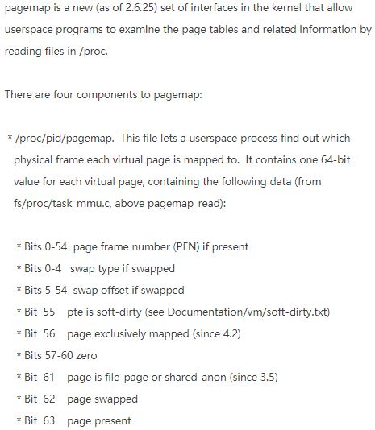

现代操作系统中，进程是运行在虚拟地址空间上的。比如在32位机器上，进程可以认为自己有4GB的内存空间可以使用。但是真实被使用到的虚拟地址肯定得有真实的存储介质相对应。如果不考虑swap的话，每一个虚拟地址都对应一个物理地址。现代的硬件一般是以分页的方式管理内存的（x86的分段与分页相结合的所谓段页式也只是为了兼容罢了）。一个虚拟页映射到一个物理页。以常见的4KB的页大小为例，如果一个虚拟地址0xfe0000对应物理地址的0x40000，那么接下来的虚拟地址0xfe0000+i就对应物理地址的0x40000+i，i=0,1,2,...,4095。但是虚拟地址的0xfe1000可能对应着一个相去甚远的物理地址0x1c0000呢。也就是说，在虚拟地址中连续的地址，在物理上可能是碎片似的分散在内存条的各个地方，但是在一个页内，地址是连续地一一对应的。
鉴于此，要把一个虚拟地址转换成物理地址，其实就是要知道该虚拟地址所在的虚拟页对应的物理页。知道了物理页，再加上页内偏移量即可。以4KB的页大小为例，一个32位长的虚拟地址，其高20位就称为虚拟页号，低12位就是页内偏移。Linux为每一个进程都维护了一个页表，放在内存中。页表的每一项就是一个虚拟页号对应的物理页号。所以如果能够访问到页表，那么就能够把虚拟地址转换成物理地址。然而，只有在内核态才有权限访问页表，用户态是无权访问的。另外，不同的硬件结构下，页表的定位方式是不同的，而且可能很复杂，涉及多个寄存器。
一开始我没有找到能在用户态查询页表的方式。就当我快绝望的时候，万能的GitHub又帮我我一把。我在某个项目中发现了其访问/proc/<pid>/pagemap这个虚拟文件。后来我去查了这个虚拟文件，得到如下信息。
Documentation/vm/pagemap.txt

每一个页对应一个64位，也就是8字节的字段。比如虚拟地址0xfe0020，其高20位为0xfe0，也就是其虚拟页号为0xfe0。那么该虚拟页的信息处于/proc/self/pagemap这个文件中偏移量为0xfe0*8=32512的地方。从此处读取一个8字节的数据，先检查最高位'page present'，如果是1，那么说明该页处于物理内存中，那么该8字节的第0-54位就是物理页号。假设物理页号是0x40，那么实际的物理地址就是(0x40<<12)+0x20=0x40020。
介绍完原理，那么封装成一个函数就简单多了。我这里就封装一个最容易理解但是效率最低的实现方式：
#include <fcntl.h>
#include <stdio.h>
#include <stdint.h>
#include <stdlib.h>
#include <unistd.h>
size_t virtual_to_physical(size_t addr)
{
int fd = open("/proc/self/pagemap", O_RDONLY);
if(fd < 0)
{
printf("open '/proc/self/pagemap' failed!\n");
return 0;
}
size_t pagesize = getpagesize();
size_t offset = (addr / pagesize) * sizeof(uint64_t);
if(lseek(fd, offset, SEEK_SET) < 0)
{
printf("lseek() failed!\n");
close(fd);
return 0;
}
uint64_t info;
if(read(fd, &info, sizeof(uint64_t)) != sizeof(uint64_t))
{
printf("read() failed!\n");
close(fd);
return 0;
}
if(info & (((uint64_t)1) << 63) == 0)
{
printf("page is not present!\n");
close(fd);
return 0;
}
size_t frame = info & ((((uint64_t)1) << 55) - 1);
size_t phy = frame * pagesize + addr % pagesize;
close(fd);
return phy;
}